🌐 Web Remote Control System
Free & Self-hosted Windows Device Management
The Web Remote Control System is a completely free, self-hosted, web-based remote control for Windows. A lightweight Windows Agent pairs with a Blazor dashboard so you can live-stream the desktop, send mouse and keyboard input, move files, open a remote terminal, and manage processes from any browser, without sitting at the machine.
AES-256 GCM Encryption: The system is built with security as its absolute foundation. All sensitive payloads and communication between the Agent and the Backend are encrypted end-to-end using AES-256 GCM. This guarantees that even if your connection is intercepted using packet sniffers like Wireshark, the data remains completely unreadable and protected. A dedicated Server Manager tool securely generates cryptographic Master Keys and directly embeds them into the Agent executables, ensuring zero-configuration deployment without compromising security.
Live Stream & Interactive Control: Experience a high-performance, real-time visual feed of the remote desktop directly inside your web browser. Send precision mouse clicks, inputs, and movements instantly to the target device via an optimized SignalR connection, granting you seamless, interactive control as if you were sitting right in front of the monitor.
Server Manager & Deployment: Starting your own management server is easier than ever with the dedicated Server Manager tool. It provides a one-click interface to launch both the backend and frontend services, handles automatic project path detection, and cryptographically ensures all sensitive payloads and communication between the Agent and the Backend are encrypted end-to-end using AES-256 GCM. The Server Manager also acts as an automated stub builder, creating customized remote agents that are pre-configured to connect only to your self-hosted instance.
💻 Screenshot & Video Showcase
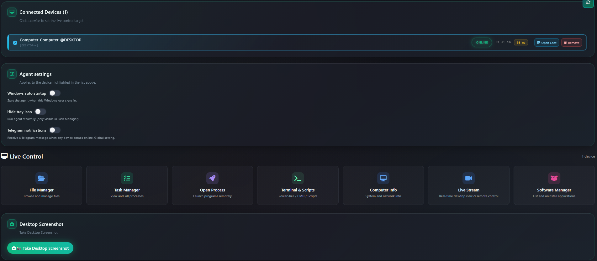
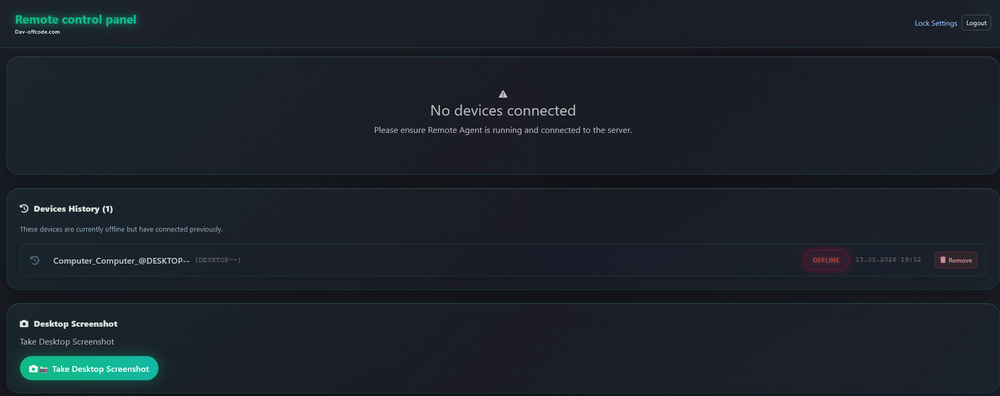
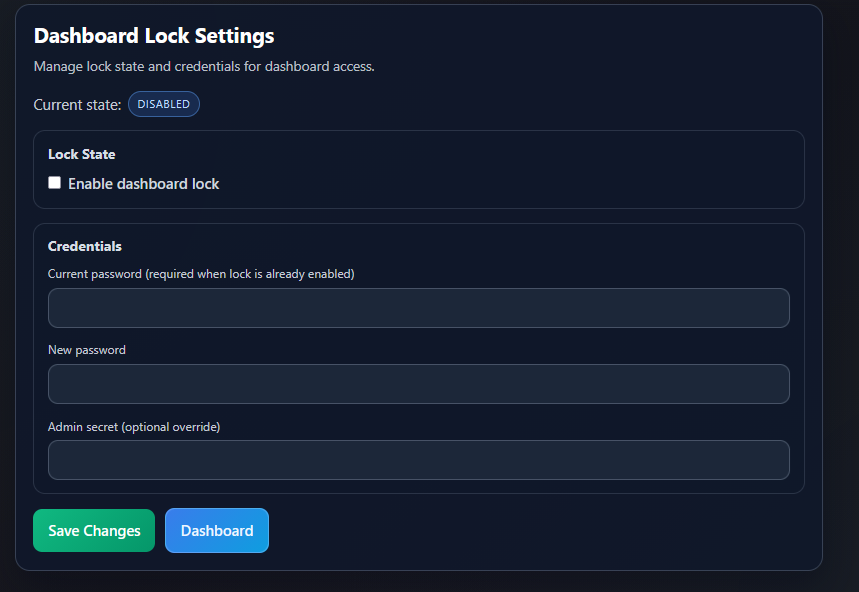
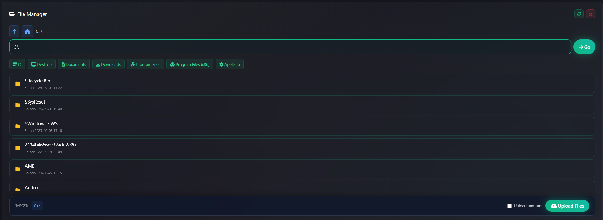
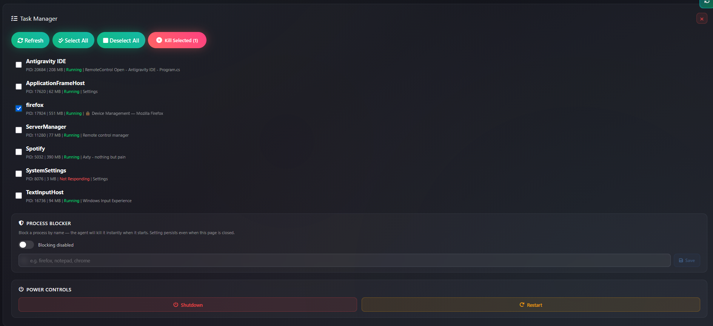
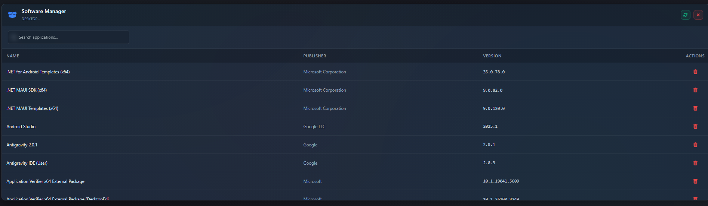
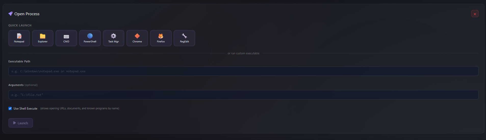
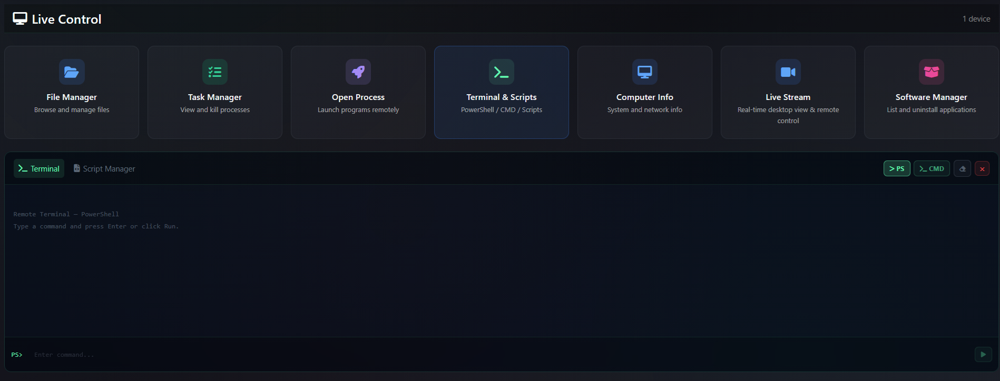
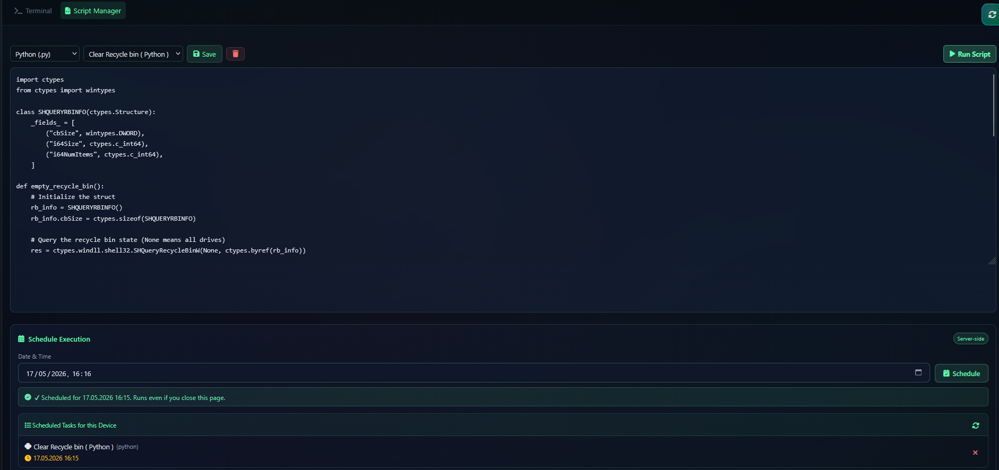
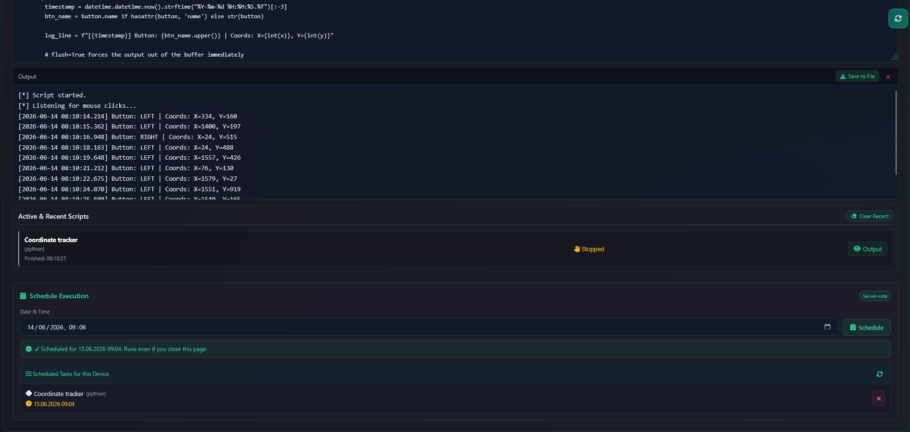
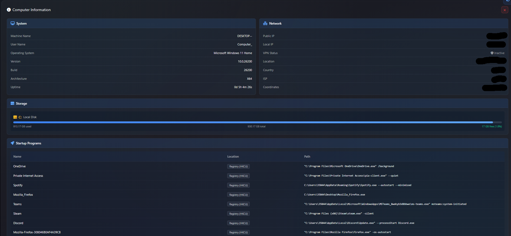
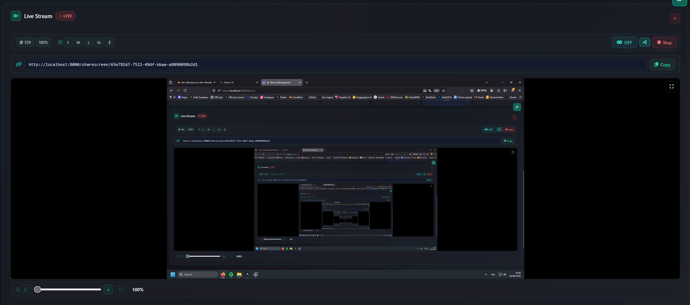
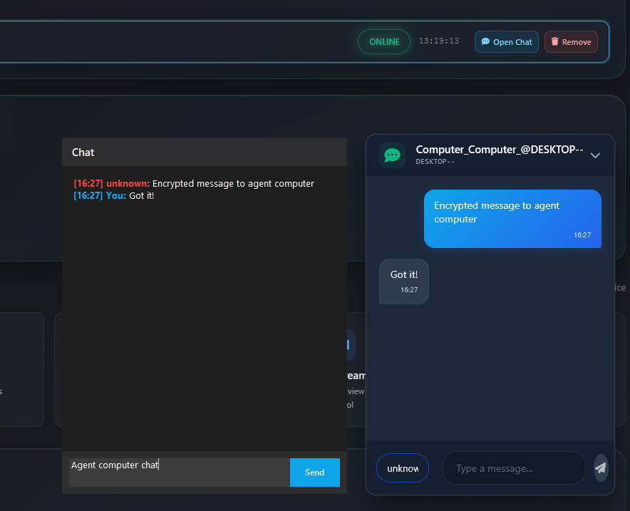
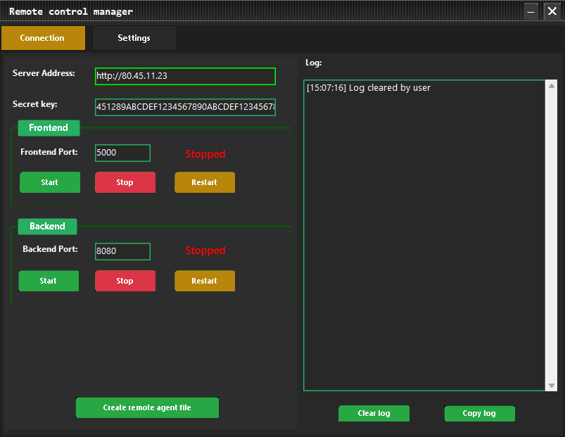
Features
Everything you need for self-hosted remote Windows management
Browse the cards with the arrows or by swiping to see every feature
AES-256 GCM encryption
Application-layer encryption for sensitive hub traffic so payloads stay protected end-to-end.
- Encrypts command and file-transfer payloads between agent, API, and dashboard
- Large file bodies use chunked AES-256-GCM with per-transfer keys and
X-Transfer-Token(HMAC) - Designed so passive packet capture does not expose secrets in clear text
- Server Manager helps distribute keys into agent builds for your deployment
Live stream & remote control
View the remote desktop in the browser and send mouse and keyboard input in real time.
- Adjustable stream quality and frame rate (up to 240 FPS)
- Dynamic zoom controls with mouse-wheel tracking
- Interactive control over SignalR for responsive remote desktop use
- Share Screen: Share the live stream via a secure, public link without dashboard login; set a custom expiry (hours + minutes) or No time limit: expired links are automatically invalidated
Chat
Real-time two-way chat window between the dashboard administrator and the remote agent’s user.
- Messages delivered instantly over the encrypted SignalR channel
- Customizable administrator nickname and persistent message history
Streaming file manager
Browse drives and folders, upload and download large files without loading everything into memory.
- Quick paths for Desktop, Documents, Downloads, Program Files, AppData, and more
- Drive list from the agent for fixed, removable, and network volumes
- Optional Upload and run to open a transferred file on the agent after upload
- File Search: Search by name with wildcard and recursive subdirectory support (up to 500 results)
- Agent HTTP legs store/transfer ciphertext (
.rcenc); paths validated with an agent path allowlist
Desktop screenshot
Capture a JPEG preview of the remote desktop from the control panel.
- Quality and resolution suited for quick diagnostics
- Close Image dismisses the preview without leaving the page
Task manager, process blocker & power controls
Inspect running processes, block unwanted applications, and control power state remotely.
- Process list and termination from the web UI
- Process Blocker: Block apps by name, agent kills them instantly on startup; setting persists in the Windows Registry across reboots
- Power controls for shutdown and restart through the dashboard workflow
Software manager
List installed applications on the agent using Windows registry data and uninstall remotely.
- Inventory style listing suitable for maintenance windows
- Silent-style uninstall flow driven from the hub
Remote process execution
Launch commands, open files, or start programs on the agent from the dashboard.
- Path and arguments sent over the encrypted control channel
- Useful for tooling, installers, and scripted maintenance
Remote terminal
Fully interactive PowerShell and Command Prompt terminal directly in the web dashboard.
- Real-time command execution and output streaming
- Direct access to the remote command line
Script manager
Built-in code editor to write, save, and execute scripts on remote agent machines.
- Supports Python, PowerShell, Batch, and VBScript
- Scripts saved in browser’s local storage for easy reuse
- Scheduled Script Execution: Set specific dates and times for scripts to run automatically
- Job-based tracking: Agent keeps running and completed scripts in memory, close the browser and resume; output is preserved
- Stop Script: Safely and asynchronously terminate a running script at any time
- Download Output: Save script execution output directly to a local file
Computer info & telemetry
Hardware, OS, network, and runtime details streamed from the agent.
- CPU, memory, OS build, and related system signals
- Helps verify which machine you are managing in multi-device setups
- Startup Programs Remove: Delete registry entries (
HKCU/HKLM) or startup folder shortcuts directly from the dashboard; result reported as a toast notification
Device history
See previously connected devices with names and status for faster reconnection.
Dashboard lock (optional)
Optional password gate for the web dashboard with secure password storage on the server, so only authorized operators can open the control panel.
- Cookie session for the Blazor UI plus short-lived JWT for SignalR and protected APIs
- Lock settings include a Dashboard shortcut back to the devices view
- Agent file-transfer endpoints can remain callable while admin routes stay protected
Remove agent
Disconnect a device and trigger remote removal of the agent executable on the target PC.
- Confirmation dialog before destructive actions
- If the agent is offline, the request can be queued server-side and delivered on reconnect
Real-time device ping
Live round-trip latency shown for every connected agent in the device list, updated every ~10 seconds.
- Color-coded RTT indicator (green / yellow / red) for at-a-glance status
- Cleartext ping IDs only, no sensitive payload in the probe
Telegram notifications & commands
Optional Telegram bot integration for instant alerts and remote queries directly from your phone.
- Online alert: Receive a Telegram message the moment any device comes online
- Configure Bot Token and Chat ID from the Agent settings panel; includes BotFather setup help and a test message button
/Get_infocommand: Send the command in your Telegram chat to fetch Computer Info from an online agent; multi-device selection when several devices are connected
Stealth mode
Hide the agent's tray icon so it runs silently in the background, visible only in the Windows Task Manager.
- Toggle from the Agent settings panel per device
- No system tray icon or taskbar entry, agent keeps running uninterrupted
Server manager
Desktop helper to configure ports, launch backend and frontend, and build configured agents.
- Independent start and stop for frontend and backend services
- Optional logging toggle and stub generation for agents
- Aligns development
.envand keys with your projects - In-app Changelog: Built-in viewer for release notes and version updates
Tor Network Support
Route agent traffic through the Tor anonymity network without port forwarding, using a
persistent .onion Hidden Service for your BackEnd.
- Enable Tor connection in Server Manager to generate and host the Hidden Service locally
- Agent stubs embed the
.onionaddress and can bundleTorBundle/tor.exe - Agents connect via Tor SOCKS5 (Long Polling); live stream may be laggy over Tor, other features remain usable
SignalR & ASP.NET Core stack
Built on ASP.NET Core, Blazor Server, SignalR, SQLite, and a Windows agent.
- Real-time hub for admin and agent traffic
- Self-hosted: you control hosting, TLS termination, and network exposure
🔐 Security Architecture
Built with defence-in-depth: every layer is independently hardened
🛡️ Request Protection
| # | Protection |
|---|---|
| 1 | Request timeout: 30 s global, 10 min for file transfers, ∞ for SignalR (Slowloris protection) |
| 2 | Security headers: CSP, HSTS, X-Frame-Options, X-Content-Type-Options, Referrer-Policy, Permissions-Policy, CORP, COOP |
| 3 | Request audit trail: All authentication events logged with IP, UserAgent, risk level and PII masking |
| 4 | Kestrel hardening: RequestHeadersTimeout: 15 s, KeepAliveTimeout: 120 s, HTTP/2 stream limit: 100 |
| 5 | Login rate limiting: ASP.NET AddRateLimiter policy login (10/min/IP) on dashboard-lock verify; internal dashboard-lock check also applies |
| 6 | Hub / share rate limiting: hub-negotiate (60/min/IP) on SignalR /devicehub; JoinShare limited via in-hub ShareJoinRateLimiter (20/min/IP) |
🔒 Server-Level Security
| Component | Implementation |
|---|---|
| Transport encryption | AES-256-GCM (SignalR payload E2E), TLS via reverse proxy (Cloudflare / Nginx): HTTPS/WSS mandatory for internet deployments |
| Password storage (Dashboard Lock) | ASP.NET Identity IPasswordHasher → PBKDF2-SHA256 with random salt; account-store encryption keys from environment / configuration (or derived from AES_MASTER_KEY_HEX) |
| JWT tokens | HS256 (HMAC-SHA256), configurable expiry (5-240 min), mandatory strong key in production |
| JWT signing key | Enforced minimum 32 chars; weak / default keys blocked at startup in production mode |
| API authentication | JWT Bearer with DashboardAccess for admin endpoints; legacy /api/user/* requires the same claim and is obsolete in favor of Dashboard Lock |
| SignalR hub auth | DashboardHubAuthorizationFilter: admin methods require dashboard_access: true; agent methods and anonymous JoinShare are explicitly allow-listed |
| AES key validation | App refuses to start if AES_MASTER_KEY_HEX is missing or not exactly 256 bits |
| Per-agent encryption keys | Each stub built via Server Manager gets its own randomly generated AES-256 key + AgentKeyId registered in AgentKeys.json (hot-reloaded). Leaking one stub no longer exposes the traffic of every other device, the shared AES_MASTER_KEY_HEX remains BackEnd↔FrontEnd only |
| Per-stub connect token | Each new stub receives a unique AGENT_CONNECT_TOKEN (256-bit random hex). The BackEnd validates it with CryptographicOperations.FixedTimeEquals on ConnectAsDevice before registering the device, preventing identity spoofing on the open hub method |
| Encrypted file transfer | Chunked AES-256-GCM (AesGcmChunkStream) on agent HTTP legs; per-transfer key in encrypted SignalR metadata; X-Transfer-Token (HMAC); server temp files as .rcenc ciphertext |
| Agent path guard | Path.GetFullPath, reject .. segments, allowlist of logical drives + shell folders on browse/search/upload/download |
| Encrypted hub tunnel | Sensitive admin↔BackEnd and agent↔BackEnd payloads travel as AES-GCM ciphertext inside generic hub targets (ReceiveEncryptedFromAdmin, ReceiveEncryptedFromAgent, ReceiveEncryptedPacket), only Base64 blobs appear on the wire |
| Replay protection | In-memory ReplayCache tracks SHA-256 fingerprints of received ciphertext blobs. Duplicate packets are rejected immediately. Combined with a 60-second packet.Timestamp window, stale or replayed packets (e.g. a captured shutdown command) are silently dropped on both BackEnd and RemoteAgent sides. Configurable via ReplayProtection:MaxAgeSeconds |
| SQL injection | Entity Framework Core parameterized queries only |
| Error handling | Internal exception details never exposed to HTTP clients; full details in server logs only |
| Audit logging | SQLite event log, action, IP, UserAgent, risk level (Low / Medium / High / Critical), PII-masked |
| Brute force detection | Automatic suspicious pattern detection (>10 failed logins or >5 rate-limit hits per hour) |
| Timing-safe comparison | FixedTimeEquals used for admin secret and connect-token verification |
| CORS | Production requires explicit Cors:AllowedOrigins or ALLOWED_ORIGINS; wildcard * with credentials is rejected (fail-closed) |
🖥️ FrontEnd-Level Security
| Component | Implementation |
|---|---|
| Session cookie | RemoteControl.DashboardAuth, SameSite=Strict, 8 h expiry |
| Blazor Server | WebSocket-based, not vulnerable to traditional CSRF |
| Return URL validation | All returnUrl values validated, must start with /, no // open redirects |
| XSS prevention | Blazor DOM encoding; dashboard JS helpers escape untrusted strings before any innerHTML use |
| Content Security Policy | Strict CSP on all pages; no unsafe-eval; limited external origins |
🔬 Payload Encryption: Live Wire Capture
What you see in Wireshark when opening Task Manager
on a remote PC from the OffCode Web Remote Control System web dashboard; only
ReceiveEncryptedPacket + encrypted Base64 on the wire.
No process names, paths, or commands in cleartext. App-layer
AES-256-GCM on top of TLS in production.
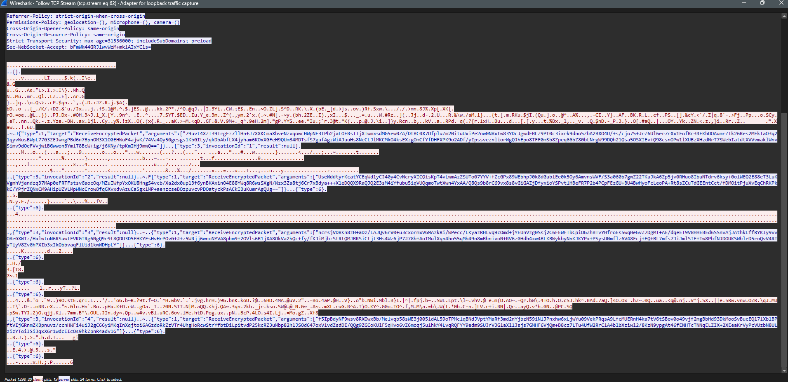
Related products
Other OffCode tools that pair well with remote device management.
Offcode Automation Tool
Separate Windows desktop product for OCR workflows, UI Automation, macros, and repeatable on-PC actions.
Explore the automation toolScreen Lock Builder Premium
Build a local Windows screen locker with password protection, blocking, saved configs, and kiosk-style options.
See premium screen lock featuresTor Chat
Self-hosted Tor chat with browser E2EE, another OffCode project if you need private rooms over .onion.
Open Tor Chat pagePricing
Simple and transparent access to the system
Free
Complete system for personal and commercial use.
Full remote control system including all features and future updates.
Instant Access & Self-Hosted
Deployment:
Windows / VPS
Developer License
Full C# & Blazor source code access for developers.
Complete system source
- ✅ Full ASP.NET Core Backend source
- ✅ Blazor Web Dashboard source
- ✅ SignalR Real-time Hubs
- ✅ Windows Agent (C#/.NET 9) source
- ✅ AES-256 GCM Security modules
- ✅ Streaming File Manager source
- ✅ Server Manager (Stub Builder) source
- ✅ Modify & build your own version
Personal Developer License
Full commercial resale rights included
Frequently Asked Questions
What is Web Remote Control System?
A self-hosted, web-based remote control for Windows. From the browser you get a live desktop stream, mouse and keyboard input, process management, streaming file transfer, remote terminal, and an optional Dashboard lock password on the control panel.
Does it work remotely over the internet?
Yes. The system uses an ASP.NET Core backend with SignalR for real-time communication. A lightweight Windows agent runs on the target device to execute commands. You can host the server on a VPS to access it from anywhere.
Can I view and control the remote screen?
Yes, the Live Stream feature provides a real-time feed of the remote desktop directly to your web browser. You can interact with the machine by sending mouse clicks and inputs instantly.
Can I transfer files securely?
Absolutely. The system includes a high-performance streaming file manager. You can browse directories, and reliably upload or download massive files without hitting memory limits.
Is the connection secure against packet sniffing?
Yes. All sensitive data is encrypted using AES-256 GCM. Even if traffic is intercepted, the data is completely unreadable. Keys are managed by the Server Manager tool.
What technologies does it use?
The system is built with ASP.NET Core, Blazor Server, SignalR, SQLite (via EF Core), and a C#/.NET Windows agent.